Eat!
Photo report + Book design
Eat! (2025).
Eat! is a photographic and editorial project focused on food delivery riders in Milan, observed as one of the most recognizable figures of the contemporary urban environment. The photo series was shot over the weekend of February 22–23, 2025, using Kodak Ultramax 400 ISO film and a Ricoh KR-5 reflex camera from 1978. The project was developed by following riders through the city by bike, documenting their movements during the evening hours, when delivery activity increases. The images capture both the workers and the visual traces of their profession: delivery bags, modified bicycles, waiting spots, restaurant fronts, and moments of transit. The photographs were then translated into a printed editorial project, combining images, captions, and research findings. The publication investigates how riders adapt their equipment and vehicles to long working days, often through structural modifications to bicycles, additional protection, and expanded load systems. The final output is a printed and bound editorial object, designed and photographed by Simone Grimaldi in 2025. The cover uses a bold orange halftone treatment, turning the documentary material into a clear visual identity for the project.
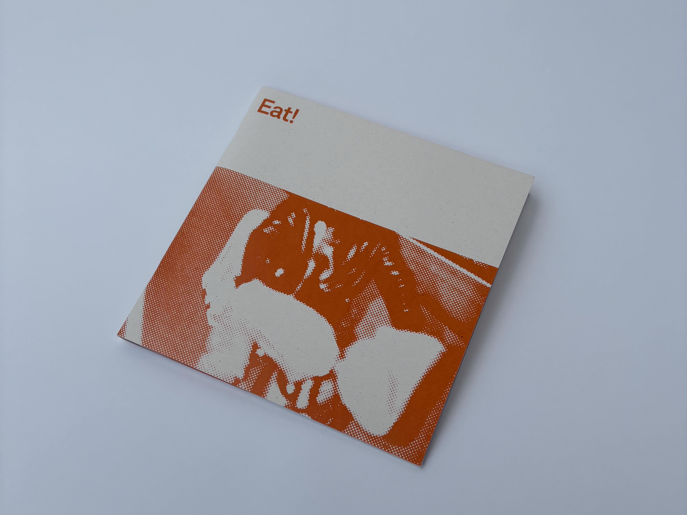
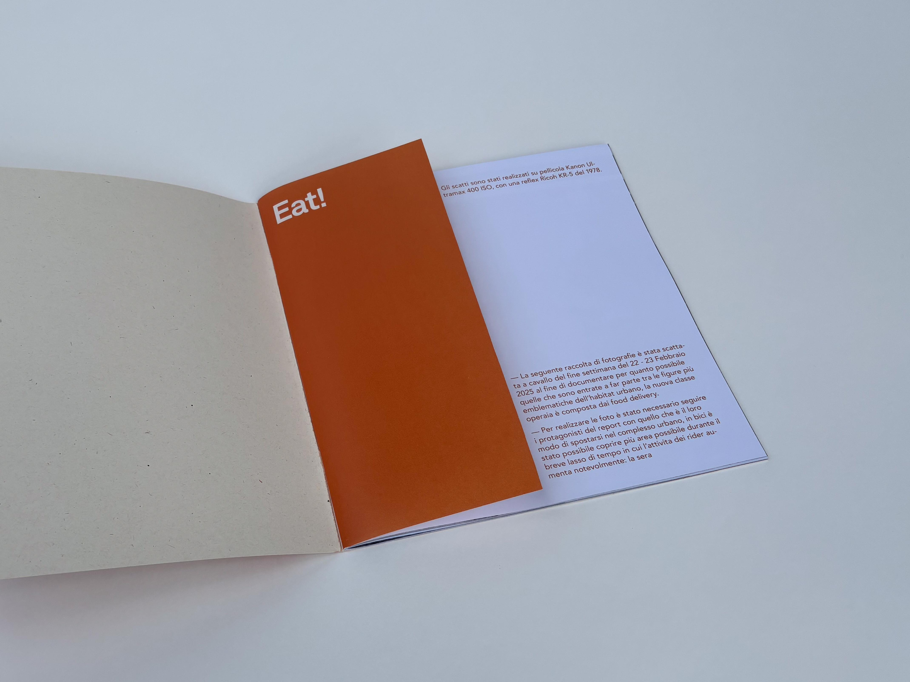
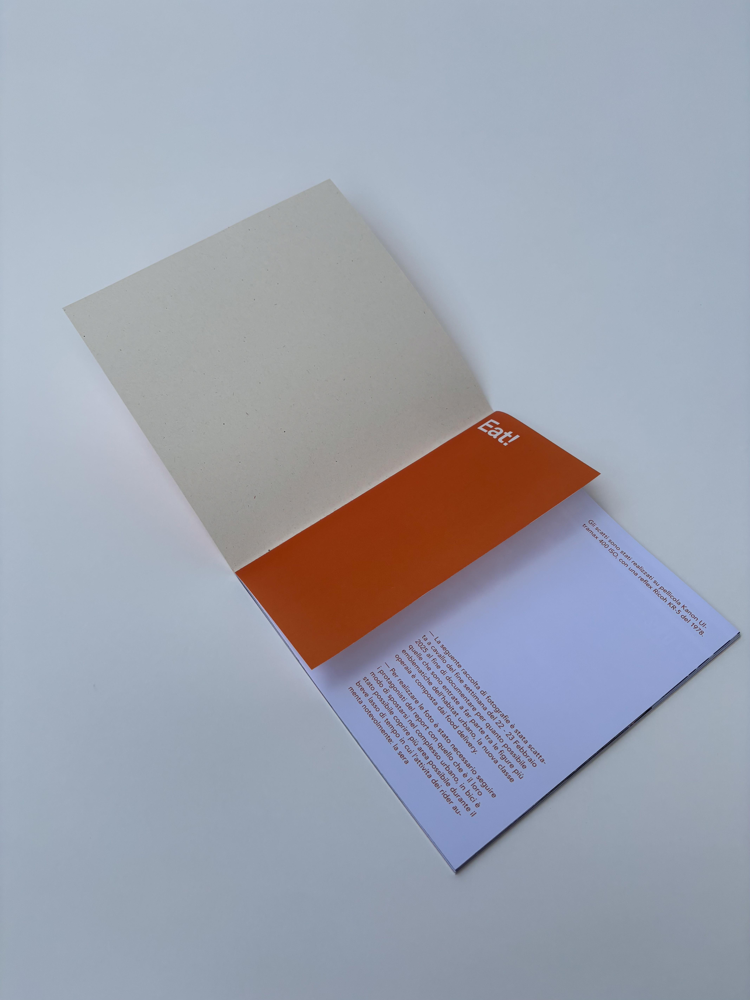
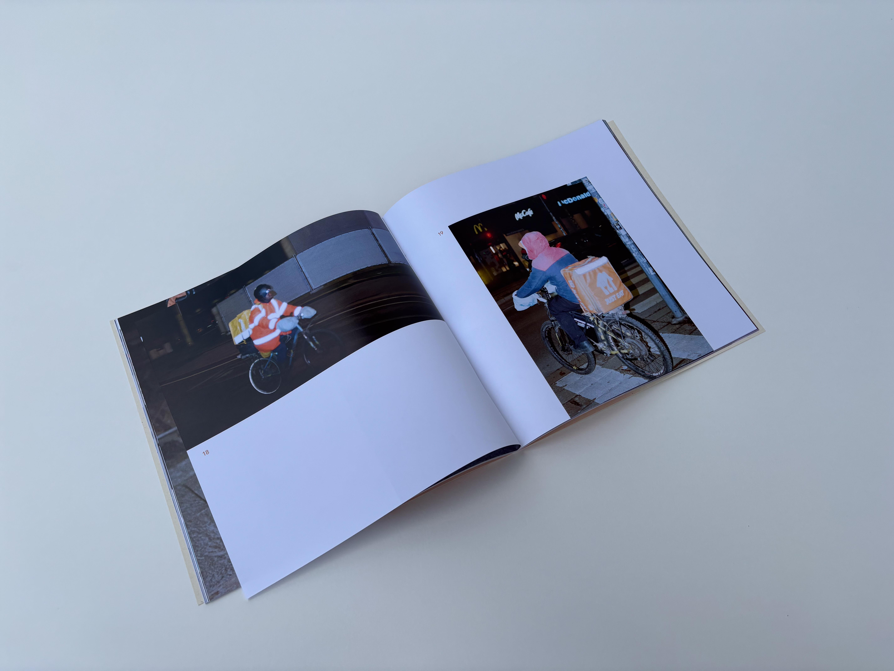
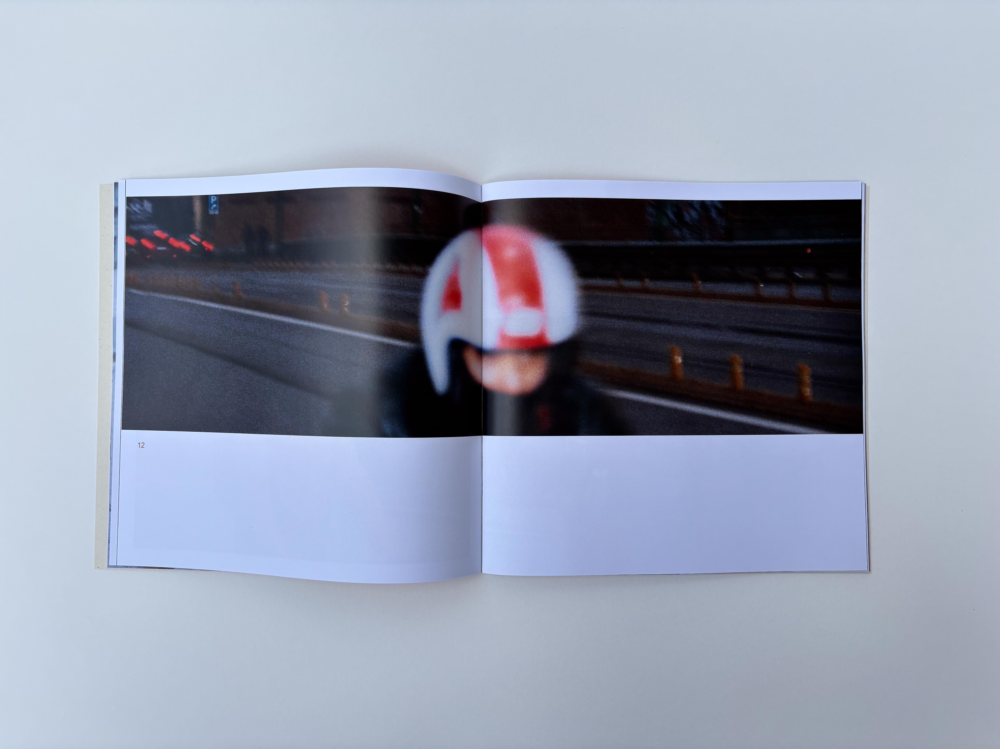
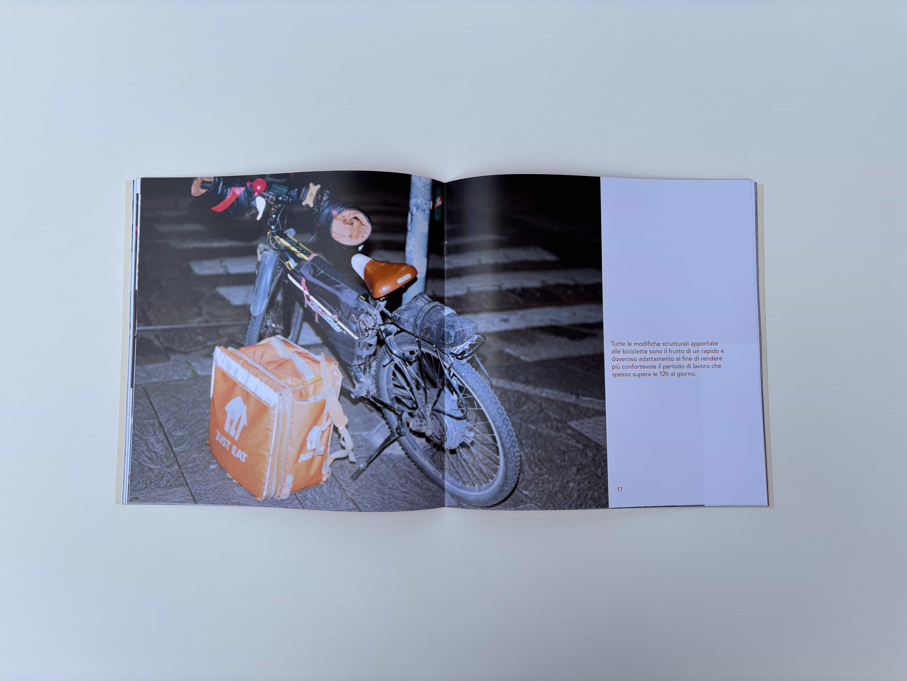
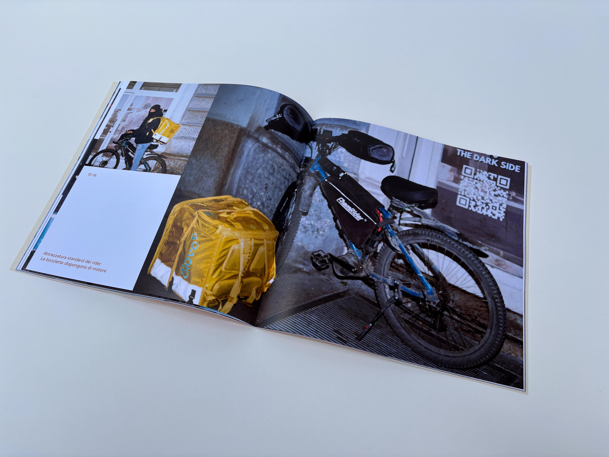
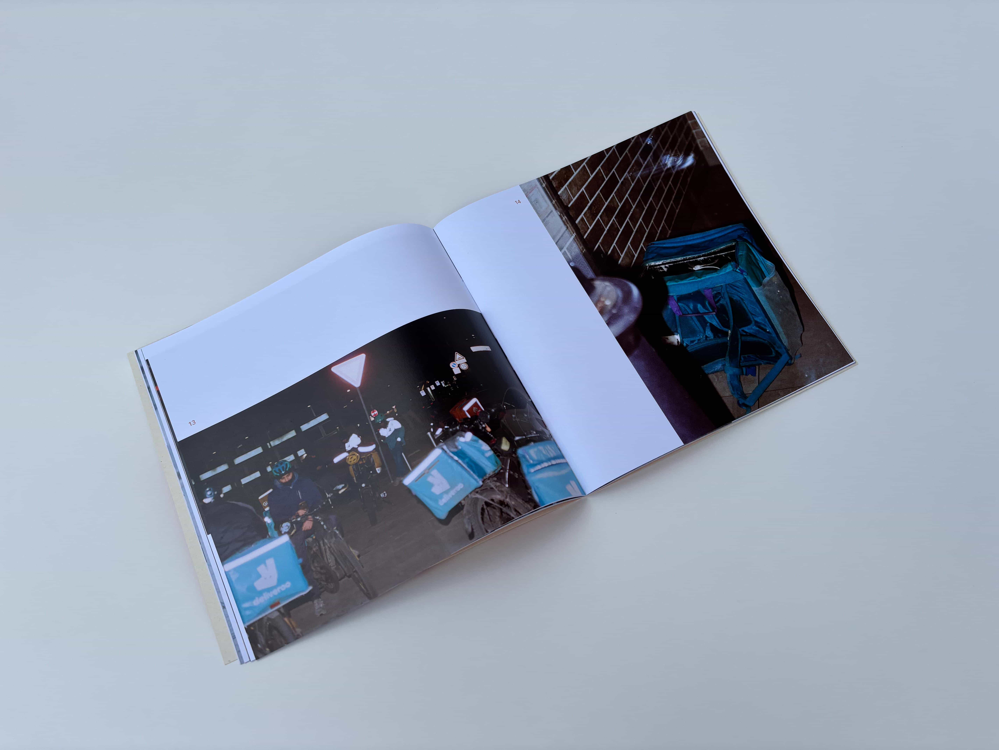
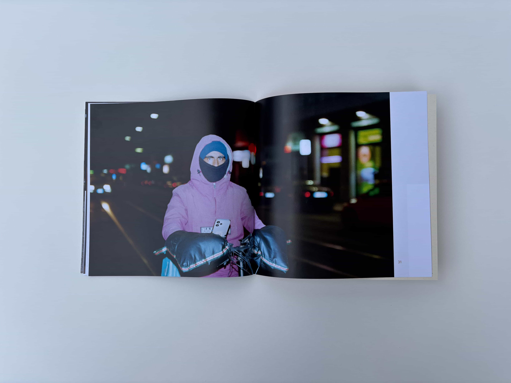
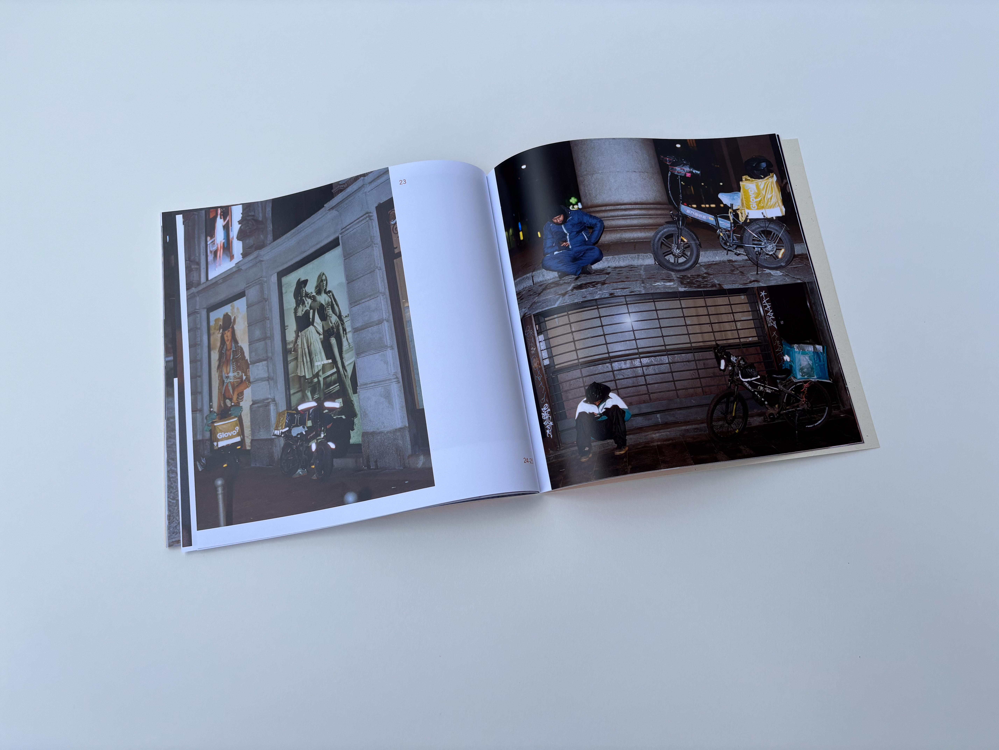
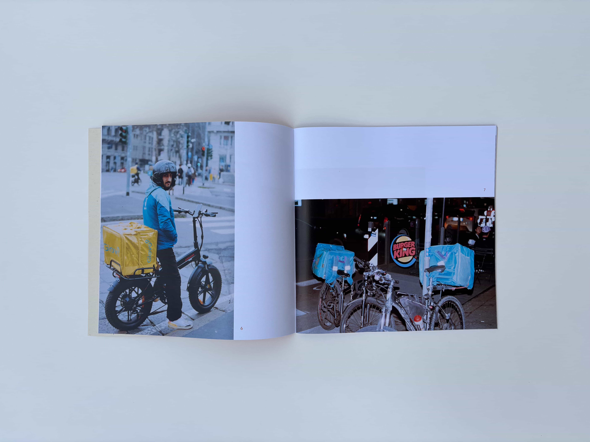
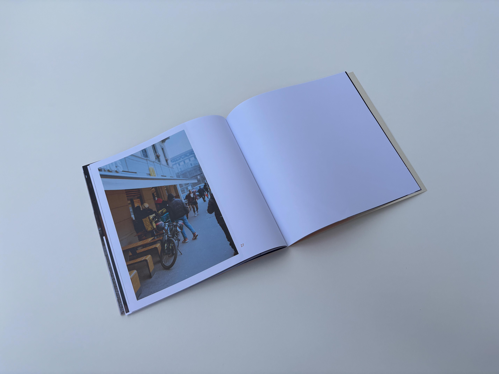
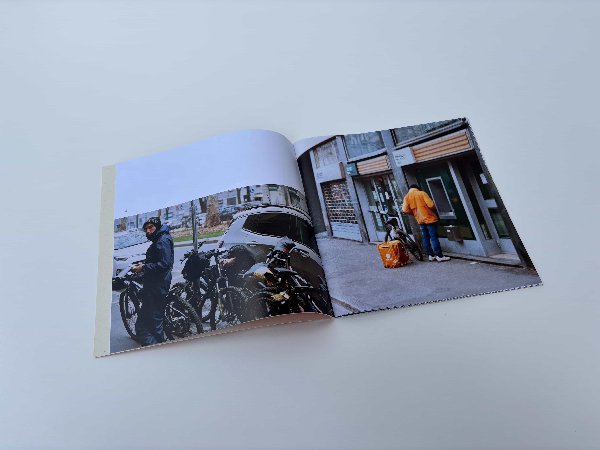